골목패스는 영도의 다양한 공간과 골목을
하나의 흐름으로 연결하는 여행 패스입니다.
여백당에서 패스를 받고,
먹거리와 살거리, 볼거리를 자유롭게 오가며
영도의 하루를 더욱 깊게 경험할 수 있습니다.
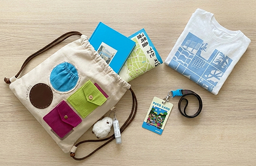
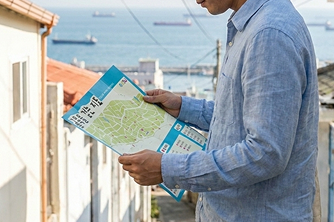
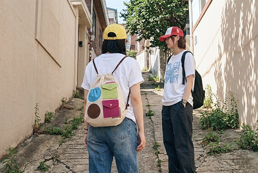
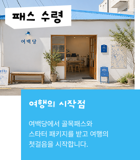
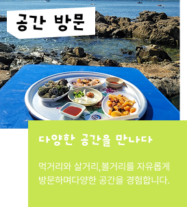
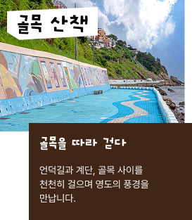
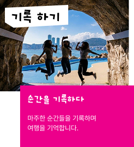
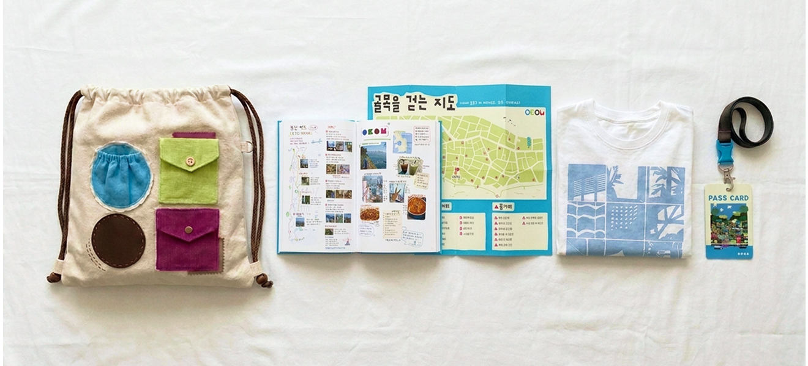
지도와 패스카드,
여행의 순간을 담아낼
구성품까지 함께 담았습니다.
영도를 더욱 자유롭게 경험할 수 있도록
여행의 시작을 함께 준비합니다.
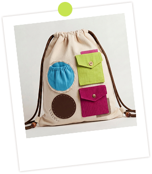
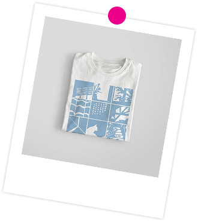
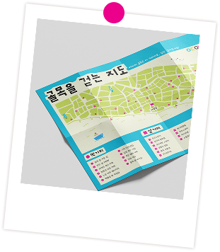
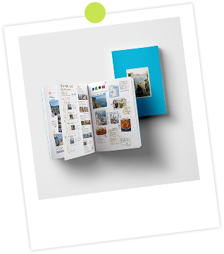
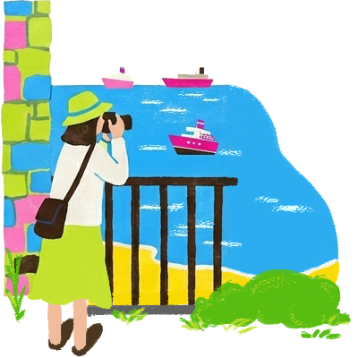